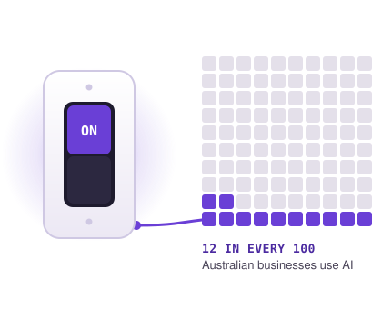

In 2024–25, 12% of Australian businesses used artificial intelligence (AI). Three years earlier, before ChatGPT launched, it was just 1%. Some industries have moved much faster than others: in media and telecommunications, 38% of businesses now use AI, the most of any industry.
Every two years, the Australian Bureau of Statistics (ABS) asks almost 7,000 businesses which technologies they use. In the latest survey, covering July 2024 to June 2025, artificial intelligence (AI) appeared on the list far more often than ever before. Here, “AI” means any use of AI tools in the business, from chatbots that draft emails to software that predicts sales.

01
The bigger the business, the more likely it uses AI
Only about 1 in 10 micro businesses (fewer than five staff) use AI. Among large employers with 200 or more staff, it is closer to 1 in 3. Bigger firms have more money, more data and often their own IT people.
Each square is 1 business in 100. Rounded to whole numbers. Source: ABS, Characteristics of Australian Business 2024–25, data cube 6, table 2.
But most businesses using AI are small
A large business is about three times as likely to use AI as a micro business. But there are more than 100 micro businesses for every large one, so micro businesses make up more than half of all the businesses using AI: about 68,000 out of 121,000.
Left: the % of businesses of each size that use AI. Right: the number of businesses using AI, found by multiplying the number of businesses of each size by the % using AI. Source: ABS, Characteristics of Australian Business 2024–25, data cube 1 table 1 and data cube 6 table 2.
02
Size matters, but attitude matters more
The ABS calls a business innovating if it introduced or worked on a new product, service or way of working during the year. Almost half of all businesses did.
Those businesses were far more likely to use AI. A small business that innovates is almost five times as likely to use AI as one that does not. Among large firms the gap is smaller, as many use AI either way.
Grey dot = businesses that did not innovate; purple dot = businesses that did. The longer the line, the bigger the gap. Source: ABS, Characteristics of Australian Business 2024–25.
03
A newcomer that has jumped the queue
CRM = customer relationship management software. EDI = electronic data interchange, which sends orders and invoices automatically between businesses. ERP = enterprise resource planning, software that runs finances, stock and staff in one system. VR / AR = virtual and augmented reality. Hover over a dot for its value. Source: ABS, Characteristics of Australian Business 2024–25, data cube 6, table 2.
How to read it: each line follows one technology from the smallest businesses on the left to the largest on the right. The higher the line, the more businesses use it compared with the other nine technologies.
For businesses with fewer than 200 staff, AI is already the fourth most-used technology. Only cloud, digital platforms and CRM software are more common.
Among micro businesses, AI (11%) is less than one percentage point behind CRM software (12%), a customer database that has been sold to small businesses for decades.
Large businesses are different. Many of them set up ERP software, EDI ordering and data analytics years ago, so AI ranks only seventh for them, even though a third of them use it.
That makes AI unusual. Most digital tools are adopted by big firms first and spread down slowly, because they need set-up costs and IT staff. Many AI tools are cheap online services that one person can start using in a day, so small businesses have taken them up almost as readily as anything else.
04
The smallest territories are the keenest
Use the menu to compare AI with other technologies. Darker states have a higher share. Map uses an Albers equal-area projection, so every state is drawn at its true relative size. Source: ABS, Characteristics of Australian Business 2024–25, data cube 6, table 2.
The Northern Territory (18%) and Tasmania (17%) lead the country in AI use, ahead of the big business hubs of Victoria (13%) and New South Wales (13%). South Australia and the ACT trail at around 8–9%.
The spread is wide: a business in the Northern Territory is about twice as likely to use AI as one in South Australia (8%).
Switch the map to Cloud technology and the picture changes: cloud is used by roughly three in four businesses everywhere. AI is still at an early, uneven stage.
Other technologies have their own leaders. Connected devices (the Internet of Things) are most common in Tasmania (11%), and customer databases (CRM) in the Northern Territory (24%).
Smaller states and territories have fewer businesses in the survey, so their figures are less precise.
High rates, but few users
A percentage only tells half the story. The Northern Territory has the highest AI rate in the country, but it has so few businesses that it accounts for just 1% of all the businesses using AI.
The dot map counts businesses instead. Almost two in three AI users are in New South Wales and Victoria. Their AI rates are only around average, but most of Australia’s businesses are there.
Queensland is third, with about 23,000 businesses using AI. Western Australia has about 9,000, and South Australia about 5,000. Tasmania, the ACT and the Northern Territory together have fewer than 6,000, or one in twenty of the national total.
How to read it: count the dots, not the colour. Each dot stands for 250 businesses using AI, so a crowded state has many AI users even if its rate is only average.
Number of dots = businesses in each state × % using AI, divided by 250. Dots are placed at random inside their state or territory, so they show how many businesses use AI, not exactly where they are. Source: ABS, Characteristics of Australian Business 2024–25, data cube 1 table 1 and data cube 6 table 2.
AI has overtaken older tech
In this tile map, each state or territory is drawn as an equal-sized square, placed roughly where it sits on the map, so small places like the ACT are as easy to read as Western Australia.
The bars show four technologies, from left to right: CRM (customer database) software, AI, the Internet of Things (connected devices and sensors) and data analytics. Cloud and digital platforms are left out because about 70% of businesses use them in every state. Everywhere, AI is already more common than connected devices or data analytics, which have been around much longer. In Tasmania it has even overtaken CRM software.
The pattern is the same in every state and territory: at least twice as many businesses use AI as use data analytics. AI arrived in workplaces only a few years ago, but it has already passed tools that businesses have had access to for much longer.
Bars run from 0 to 25%. Hover over a bar for its exact value. Source: ABS, Characteristics of Australian Business 2024–25, data cube 6, table 2.
05
Desk jobs lead, trucks and tractors lag
Industries whose work happens on screens are well ahead. Almost 4 in 10 media and telecommunications businesses use AI, and about 1 in 4 finance and professional services firms (such as accountants, lawyers and engineers) do too. Industries built on physical work are far behind: only 1% of transport and logistics businesses and 3% of farms reported using AI.
The heatmap on the right shows why AI stands out. Cloud and digital platforms are standard almost everywhere, but AI use ranges from 1% to 38%. Mining is unusual: it uses AI (18%) and data analytics (17%) far more than its low CRM use would suggest.
Bars show how many percentage points each industry sits above or below the 12.1% average. Numbers at the end of each bar are the % of businesses in that industry using AI. Source: ABS, Characteristics of Australian Business 2024–25, data cube 6, table 2.
Platforms = digital platforms (websites, apps, online marketplaces); CRM = customer relationship management software; IoT = Internet of Things (connected devices and sensors). Rows are sorted by AI use. Click an industry to highlight it, and double-click to reset.
Where the AI users actually are
Media and telecoms has the highest rate of AI use, but it is a small industry with only about 10,000 businesses. Professional services has a lower rate but 16 times as many businesses, so it has about 38,000 businesses using AI, almost a third of the national total. Construction is the biggest industry of all, yet only about 12,000 of its 186,000 businesses use AI.
Each column is an industry. Its width shows how many businesses it has, and the purple part shows the % using AI, so the purple area shows how many businesses use AI. Numbers are thousands of businesses using AI. Hover over a column for details. Source: ABS, Characteristics of Australian Business 2024–25, data cube 1 table 1 and data cube 6 table 2.
06
How does Australia compare with Europe?
Europe’s statistics office, Eurostat, asks businesses across Europe a similar question every year. Its size groups don’t match the ABS groups exactly, so each Australian size group is compared with the closest European one.
Use the menu to change the business size. Grey countries have no data. The map uses an equal-area projection, so every country is drawn at its true relative size. Source: Eurostat (2026), table 1; ABS (2026).
Australia’s big businesses are well behind Europe’s. About 35% of Australian businesses with 200 or more staff use AI, compared with 55% of large businesses across the European Union (EU) and almost 80% in Finland. Only six of the 33 European countries do worse.
Switch the map to small businesses and the gap shrinks: 12% of small Australian businesses use AI, against 17% across the EU.
Sorted by large businesses. The longer the line, the bigger the gap between small and large businesses. Australia’s size groups are 5–19, 20–199 and 200+ staff; Europe’s are 10–49, 50–249 and 250+.
07
What’s holding businesses back?
Circle area shows the % of businesses that reported any barrier. Colour shows the most common single barrier. The ACT circle is moved offshore to avoid overlap. Barriers relate to digital technology in general, not only AI. The circles are close in size because the values are close; each is labelled with its exact %. Source: ABS, Characteristics of Australian Business 2024–25, data cube 6, table 4.
About 37% of businesses said something limited their use of digital technology. In the four largest states, the most common problem was not enough staff skills.
In South Australia, Tasmania and the Northern Territory, more businesses were unsure it is worth the cost. The Northern Territory had the most businesses held back (45%), even though it leads in AI use. In the ACT, the top barrier was not enough funds.
The switch is on, but the room isn’t lit yet
In three years, AI went from 1% of Australian businesses to 12%. But nearly 9 in 10 businesses are not using it yet, and the ones that are left behind have a lot in common.
Size. Large businesses are three times as likely to use AI as micro businesses (35% vs 11%), yet micro businesses make up 56% of all AI users, simply because there are so many of them.
Attitude. Businesses that innovate are far more likely to use AI at every size. A small business that innovates is almost five times as likely to use it.
Place. The Northern Territory and Tasmania have the highest rates, but two in three AI users are in NSW and Victoria, where most businesses are.
Industry. Screen-based industries lead: 38% of media and telecoms businesses use AI, but only 1% in transport and logistics. Professional services has almost a third of all AI users.
The world. Australia’s large businesses (35%) trail Europe’s (55%), ranking 27th of 33 countries. The gap is much smaller for small businesses.
Barriers. More than a third of businesses are held back from using digital technology, most often by a lack of staff skills or doubts that it is worth the cost.
Building skills, and showing small businesses in hands-on industries clearly what AI is worth, would do the most to help the rest catch up.
About the data
How the data was prepared
- ABS survey. Figures come from the ABS Characteristics of Australian Business 2024–25, which surveys about 7,000 businesses. Values were copied from data cube 6 (tables 2 and 4: technologies used and factors limiting their use) and data cube 1 (table 1: number of businesses) into small CSV files by business size, industry and state. Short industry names were added; no values were changed.
- Worked-out numbers. The number of businesses using AI is the number of businesses multiplied by the % using AI. This feeds the butterfly chart, the Marimekko chart and the dot map. Gaps from the 12.1% average and technology ranks are calculated inside Vega-Lite.
- Europe. Country figures by business size come from table 1 of Eurostat’s 2026 report on AI use in EU enterprises (2025 data). Australia’s ABS figures for the closest size groups were added to the same file so the two sources can be compared directly.
- Maps. State and country outlines are from Natural Earth (1:50m). They were filtered to Australia and Europe, simplified and converted to TopoJSON. Jervis Bay Territory was removed because the ABS has no separate figures for it.
- Dot map. Each state’s number of AI users was divided by 250 to get its number of dots. A script then placed the dots at random points inside the state’s outline, using a fixed random seed so the map is the same every time.
Things to keep in mind
- The ABS figures are survey estimates. Smaller states and territories have fewer businesses in the sample, so their figures are less precise.
- Eurostat only counts businesses with 10 or more staff, and its size groups (10–49, 50–249, 250+) differ from the ABS groups (5–19, 20–199, 200+). Europe’s figures are for 2025; Australia’s are for the 2024–25 financial year.
- The barriers question asks about digital technology in general, not only AI.
- Dots on the dot map are placed at random inside each state, so they show how many businesses use AI, not exactly where they are.
- “Using AI” covers any use, from a chatbot that drafts emails to software built into business systems. It says nothing about how much a business relies on it.